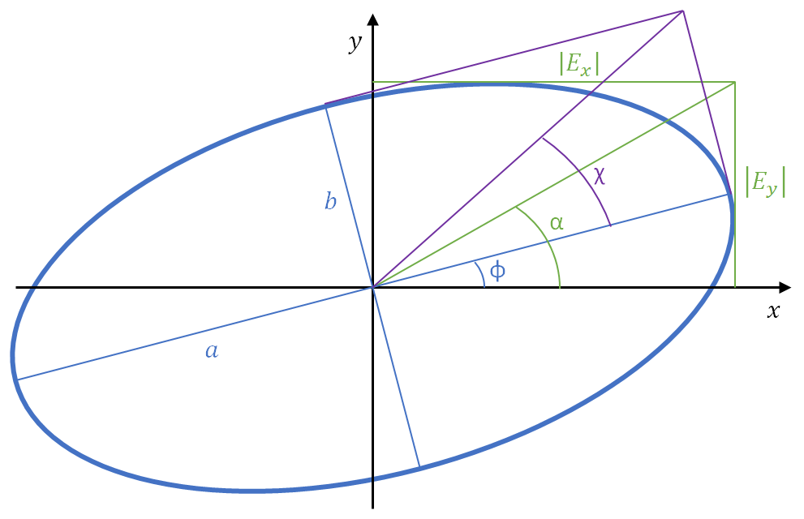

2.1. Example 3: Analysis
In Optics, polarimetry is the discipline that studies the measurement and interpretation of the polarization of light waves, and the behavior of optical elements upon the polarization of light waves. In other words, it studies the measurement and analysis of Jones/Stokes vectors (light waves) and Jones/Mueller matrices (optical objects). This example is devoted to show the different analysis possibilities offered by py_pol.
[1]:
%load_ext autoreload
%autoreload 2
[2]:
import numpy as np
from py_pol import degrees
from py_pol.jones_vector import Jones_vector
from py_pol.jones_matrix import Jones_matrix
from py_pol.stokes import Stokes, create_Stokes
from py_pol.mueller import Mueller
2.1.1. Analysis of light waves
2.1.1.2. Theory of Jones vectors
A transversal light wave can be described as:
\(\overrightarrow{E}=\left[\begin{array}{c} E_{x}\\ E_{y}\\ 0 \end{array}\right]e^{i\left(kz-\omega t\right)}e^{i\varphi}=\overrightarrow{E}_{pol}e^{i\left(kz-\omega t\right)}\)
Being \(\varphi\) the global phase, \(z\) the propagation direction of light, $k=:nbsphinx-math:left\Vert `:nbsphinx-math:overrightarrow{k}`:nbsphinx-math:right\Vert `$ the wavevector modulus, :math:omega` the angular frequency and \(\overrightarrow{E}_{pol}\) the polarization Jones vector composed of two complex components \(E_x\) and \(E_y\). Any complex 2x1 vector can describe a physically realizable light wave polarization state.
The Jones vector is completely described by four parameters. There are several sets of parameters that can be used. Some of the most used ones are the following:
The real and imaginary parts of \(E_x\) and \(E_y\).
Global phase (phase of \(E_x\), \(\varphi\)), electric field amplitudes (\(\left|E_{x}\right|\) and \(\left|E_{y}\right|\)) and the phase difference between components (\(\delta\)).
Global phase, semimajor and semiminor ellipse axes (\(a\) and \(b\) respectively) and the semimajor axis azimuth (\(\phi\)).
Global phase, wave intensity (\(I=\left|E_{x}\right|^{2}+\left|E_{y}\right|^{2}\)) and the characteristic angles \(\alpha\) (ratio angle: \(\tan\alpha=\frac{\left|E_{y}\right|}{\left|E_{x}\right|}\)) and \(\delta\).
Global phase, wave intensity, azimuth (\(\phi\)) and ellipticity angle (\(\tan\chi=\frac{b}{a}\)).
Most of these parameters can be easily visualized in the ellipse produced by the real part of \(\overrightarrow{E}\):

It is worth noting that not all the values for the four angles should be used. Specifically:
\(\;\alpha\;\in\;[0º, 90º]\)
\(\;\delta\;\in\;[0º, 360º)\)
\(\;\phi\;\in\;[0º, 180º)\)
\(\;\chi\;\in\;[-45º, 45º]\)
Also, there are some cases where two or more different values correspond to the same polarization state. For example, right-handed circular polarization corresponds to \(\chi=45º\) and any azimuth value.
Analyze a Jones vector means calculating one set of 4 parameters. We chose to use mainly the two last sets of parameters, as their physical meaning is easily understood and highly compatible with polarimetry experiments.
In some special cases, one one of the parameters used to describe the light wave may be undetermined. For example, circular polarization states does not have a determined azimuth.
2.1.1.2. Example of analysis of Jones vectors
All the parameters described above can be easily calculated from a Jones_vector object through the parameters subclass. This subclass also provides some other parameters that can be useful.
[3]:
# Create a random Jones vector
E = Jones_vector('Random polarization')
E_real = np.random.rand(2, 10)
E_imag = np.random.rand(2, 10)
E.from_matrix(M=E_real+1j*E_imag)
print(E)
Random polarization =
[+0.611 + +0.042j] [+0.115 + +0.143j] [+0.460 + +0.362j] [+0.336 + +0.089j] [+0.759 + +0.967j] [+0.430 + +0.081j] [+0.170 + +0.355j] [+0.775 + +0.502j] [+0.209 + +0.336j] [+0.910 + +0.555j]
[+0.521 + +0.111j] [+0.977 + +0.880j] [+0.471 + +0.975j] [+0.052 + +0.317j] [+0.840 + +0.659j] [+0.484 + +0.508j] [+0.484 + +0.042j] [+0.118 + +0.491j] [+0.377 + +0.191j] [+0.936 + +0.963j]
[4]:
# Calculate a set of parameters
gp = E.parameters.global_phase(verbose=True)
I = E.parameters.intensity(verbose=True)
azimuth = E.parameters.azimuth(verbose=True)
ellipticity = E.parameters.ellipticity_angle(verbose=True)
The global phase of Random polarization is (deg.):
[ 3.93837815 51.24825327 38.17561704 14.83122596 51.84739025 10.63523802
64.38101984 32.9254776 58.16464824 31.35144831]
The mean value is 35.749869669267426 +- 19.836854695525744
The intensity of Random polarization is (a.u.):
[0.65841176 1.76353029 1.51604907 0.22373311 2.65142412 0.68394414
0.39102532 1.10776135 0.33543762 2.94046887]
The mean value is 1.2271785642156625 +- 0.9202757817955234
azimuth (10,)
The azimuth of Random polarization is (deg.):
[40.98926992 82.14653398 63.02853497 39.66826606 40.8657103 60.58807385
56.21219625 24.24151122 47.19130125 51.77191342]
The mean value is 50.67033112260028 +- 15.150079415893934
The ellipticity angle of Random polarization is (deg.):
[ 4.00944089 -1.25855236 10.7709465 32.7070527 -6.79636782
15.82616594 -28.68147503 17.73355527 -15.60529763 7.04709159]
The mean value is 3.5752560064644756 +- 16.740820023303353
[5]:
# Calculate some other parameters
dlp = E.parameters.degree_linear_polarization(verbose=True)
dcp = E.parameters.degree_circular_polarization(verbose=True)
The degree of linear polarization of Random polarization is:
[0.99022215 0.99903516 0.93014934 0.41605694 0.97199081 0.85124799
0.53931544 0.81444872 0.85526845 0.96989674]
The mean value is 0.8337631740724044 +- 0.19001130785843334
The degree of circular polarization of Random polarization is:
[ 0.13949944 -0.04391763 0.36718142 0.90933856 -0.23501888 0.52476362
-0.84210383 0.58023553 -0.51818518 0.24351655]
The mean value is 0.11253096079095519 +- 0.5060350336785997
The checks subclass has some methods that allow analyzing the Jones vectors to see if some conditions are met.
[6]:
cond = E.checks.is_linear(verbose=True)
Random polarization is linearly polarized:
[False False False False False False False False False False]
The mean value is 0.0 +- 0.0
2.1.1.3. Theory of Stokes vectors
Stokes vectors can also be used to represent the polarization state of light waves. They are composed of four real elements:
\(S=\left[\begin{array}{c} I\\ Q\\ U\\ V \end{array}\right]=\left[\begin{array}{c} S_{0}\\ S_{1}\\ S_{2}\\ S_{3} \end{array}\right]=\left[\begin{array}{c} I_{total}\\ I_{0\text{º}}-I_{90\text{º}}\\ I_{45\text{º}}-I_{135\text{º}}\\ I_{right}-I_{left} \end{array}\right]\)
The four elements of the Stokes vector represent some intensities: \(I_{total}\) is the total intensity, \(I_x\) is the partial intensity of linear polarization of angle \(x\), and \(I_{right}\) and \(I_{left}\) are the partial right-handed and left-handed circular polarizations. Not every 4x1 real vector is a physically realizable Stokes vector, as it must fulfill the conservation of energy:
\(S_{0}^{2}\geq S_{1}^{2}+S_{2}^{2}+S_{3}^{2}\).
There are some differences between Stokes and Jones vectors. Stokes vectors use intensity, while Jones vectors use electric field. This means that Jones vectors have the information of the wave global phase, while Stokes vectors can be used to describe partially depolarized light. Totally polarized states (pure states) have their electric field totally described by the equation above. Totally depolarized light (or natural light) electric field is random (with the module of the electric field limited by the wave intensity). Partially polarized light can be divided into the sum of a totally polarized state plus a totally unpolarized state:
\(S=\wp S_{pol}+(1-\wp)S_{depol}\).
Being \(\wp\) the polarization degree, \(S_{pol}\) the pure Stokes vector. The totally polarized Stokes vector fulfills the equation:
\(S_{0}^{2} = S_{1}^{2}+S_{2}^{2}+S_{3}^{2}\).
While a totally unpolarized Stokes vectors have \(S_1=S_2=S_3=0\).
NOTE: Even if Stokes vectors do not contain neither use the global phase of the light wave, Stokes objects do. So it is possible to calculate the result of interference experiments using Stokes objects.
A Stokes vector can be analyzed by describing some of their parameters. Like Jones vectors, there are several sets of 4 parameters that completely describe a Stokes vector. The most usual are:
The four components of the vector.
Polarization degree, wave total intensity and the characteristic angles \(\alpha\) and \(\delta\).
Polarization degree, wave total intensity, azimuth (\(\phi\)) and ellipticity angle (\(\chi\)).
It is important noting that the four angles are defined only for pure states. In the case of partially depolarized states, those angles are referred to the totally polarized part of the Stokes vector.
2.1.1.4. Example of analysis of Stokes vectors
All the parameters described above can be easily calculated from a Stokes object through the parameters subclass. This subclass also provides some other parameters that can be useful.
[7]:
# Create a random Stokes vector
S = Stokes('Random polarization')
S_matrix = np.random.rand(4, 10)
S_matrix[0,:] = np.sqrt(3) # This assures that the Stokes vectors are physically realizable.
S.from_matrix(M=S_matrix)
print(S)
Random polarization =
[+1.732] [+1.732] [+1.732] [+1.732] [+1.732] [+1.732] [+1.732] [+1.732] [+1.732] [+1.732]
[+0.038] [+0.515] [+0.383] [+0.316] [+0.109] [+0.784] [+0.585] [+0.450] [+0.216] [+0.618]
[+0.164] [+0.089] [+0.500] [+0.014] [+0.013] [+0.310] [+0.956] [+0.754] [+0.013] [+0.486]
[+0.354] [+0.278] [+0.935] [+0.366] [+0.598] [+0.388] [+0.013] [+0.914] [+0.861] [+0.213]
[8]:
# Calculate a set of parameters# Calculate a set of parameters
P = S.parameters.degree_polarization(verbose=True)
I = S.parameters.intensity(verbose=True)
azimuth = S.parameters.azimuth(verbose=True)
ellipticity = S.parameters.ellipticity_angle(verbose=True)
The degree of polarization of Random polarization is:
[0.22603166 0.34208981 0.65125548 0.27931878 0.35089367 0.53580554
0.64739223 0.73187421 0.51231959 0.47014339]
The mean value is 0.4747124344364745 +- 0.16285764727988405
The intensity of Random polarization is (a.u.):
[1.73205081 1.73205081 1.73205081 1.73205081 1.73205081 1.73205081
1.73205081 1.73205081 1.73205081 1.73205081]
The mean value is 1.7320508075688772 +- 0.0
The azimuth of Random polarization is (deg):
[38.50981184 4.91384278 26.27462142 1.23002572 3.49470723 10.77507868
29.27118234 29.59214112 1.68917258 19.10618662]
The mean value is 16.48567703297244 +- 13.076530820546264
The ellipticity angle of Random polarization is (deg):
[32.2932454 14.00430216 28.01469235 24.59408389 39.79868809 12.36192695
0.32501925 23.06875537 37.93833636 7.57919225]
The mean value is 21.997824207488556 +- 12.471611255030032
[9]:
# Calculate some other parameters
dlp = S.parameters.degree_linear_polarization(verbose=True)
dcp = S.parameters.degree_circular_polarization(verbose=True)
The degree of linear polarization of Random polarization is:
[0.09700106 0.30202325 0.36390049 0.18255631 0.06335883 0.48669046
0.64735056 0.50713755 0.12501103 0.45378554]
The mean value is 0.32288150875733673 +- 0.1904035725478243
The degree of circular polarization of Random polarization is:
[0.20415951 0.1606468 0.54010196 0.21140524 0.3451261 0.22409814
0.00734471 0.5276849 0.49683358 0.12293695]
The mean value is 0.2840337871516376 +- 0.17519511210662467
The checks subclass has some methods that allow analyzing the Stokes vectors to see if some conditions are met.
[10]:
cond = E.checks.is_linear(verbose=True)
Random polarization is linearly polarized:
[False False False False False False False False False False]
The mean value is 0.0 +- 0.0
[11]:
S.M[0,0] = 0 # This forces the first Stokes vector to not be physically realizable
cond = S.checks.is_physical(verbose=True)
Random polarization is physically realizable:
[False True True True True True True True True True]
The mean value is 0.9 +- 0.30000000000000004
2.1.1.5. Error filtering
Stokes vectors must fulfill a single equation to be physically realizable, i.e., to describe a physical light state:
\(S_0 \geq \sqrt{S_1^2 + S_2^2 + S_3^2}\)
Experimental error during the measurement of a Stokes vector may produce that the calculated vectors are unphysicallspecially for pure vectors which are in the threshold of not fulfilling the equation.
If a Stokes vector is not physically realizable, it can be solved by increasing \(S_0\) or decreasing the rest of the vector components. Usually, the error in \(S_0\) is smaller than the error in the rest of the elements, so it is safer to do the later. The method filter_physical_conditions performs that correction to all elements of a Stokes object which are unphysicall:
[12]:
S = Stokes("Original").from_matrix(np.random.rand(4, 6))
S.checks.is_physical(verbose=True)
S.parameters.intensity(verbose=True)
S.analysis.filter_physical_conditions()
S.name = "Filtered"
S.checks.is_physical(verbose=True);
S.parameters.intensity(verbose=True);
Original is physically realizable:
[False False False False True False]
The mean value is 0.16666666666666666 +- 0.37267799624996495
The intensity of Original is (a.u.):
[0.66572699 0.03286369 0.40515951 0.90130522 0.79255909 0.3986525 ]
The mean value is 0.5327111667988825 +- 0.2901621322397332
Filtered is physically realizable:
[ True True True True True True]
The mean value is 1.0 +- 0.0
The intensity of Filtered is (a.u.):
[0.66572699 0.03286369 0.40515951 0.90130522 0.79255909 0.3986525 ]
The mean value is 0.5327111667988825 +- 0.2901621322397332
2.1.2. Analysis of optical elements
2.1.2.1. Theory of Jones matrix objects
Pure optical elements (elements that do not depolarize totally polarized light states) can be described by a Jones matrix, a 2x2 matrix of complex numbers:
\(J=\left[\begin{array}{cc} J_{00} & J_{01}\\ J_{10} & J_{11} \end{array}\right]\).
The effect of an optical element upon an incident light wave is calculated by multiplying the Jones matrix of the optical object by the Jones vector of the light wave:
\(E_{out}=J\,E_{in}\).
There are three things that an optical object can do to a light wave in Jones formalism:
Diattenuate (vary the electric field amplitude).
Retard (vary the delay between electric field components).
Increase the global phase.
The first two phenomena define two types of optical elements: diattenuator and retarders. Both diattenuators and retarders may increase the global phase of light waves.
Diattenuators are element that vary the electric field amplitude of the incident wave. Usually, this variation is different on both electric field components. These variations are described by the maximum and minimum field transmissions (\(p_1\) and \(p_2\) respectively). Alternatively, intensity transmissions can be used: \(T_{max}=p_1^2\) and \(T_{min}=p2^2\). Passive diattenuators have both \(T_{i}\leq1\), while active diattenuators have one or both \(T_{i}>1\). The last ones are usually called amplifiers. Diattenuators are often called polarizers (it will be explained for Mueller formalism) and usually have \(p_{1}\simeq1\) and \(p_{2}\simeq0\).
Retarders introduce a phase delay between electric field components called retardance (\(\Delta\)). This allows changing from linear to elliptical polarization. Retardance is between 0º and 180º, as different values are equivalent to a retardance between those values and/or a rotation. Special cases of retarders are quarter and half-waveplates, which present a retardance of 90º and 180º respectively.
Every Jones matrix due to being a 2x2 matrix, has at least two eigenvectors, often referred as eigenstates. If those eigenstates are orthogonal, the optical element is referred as homogeneous. The eigenvalues of a diattenuator are \(p_1e^{i\varphi}\) and \(p_2e^{i\varphi}\). The eigenstate associated to \(p_1\) is called the transmission axis and the eigenstate associated to \(p_2\) the extinction axis (due to the usual values for polarizers). In the case of retarders, the two eigenvalues are \(e^{i\varphi}\) and \(e^{i(\varphi + \Delta}\). The eigenstate associated with those eigenvalues are called the fast and slow axes respectively, due to the difference in phase.
Independently of the optical element, its eigenstates are usually characterized using two angles: the characteristic angles or azimuth and ellipticity. The reason is that, if a Jones vector is an eigenvector of \(J\), it remains an eigenvector even if its intensity or global phase is varied. If the optical element is homogeneous, then only one eigenstate is characterized, as the other is orthogonal to the given one. In the case of diattenuators and retarders, the given eigenstate is usually the transmission axis and the fast axis respectively.
The global phase introduced by the Jones matrix can be a difficult topic. First, this parameter is rarely measured, as most experiments only consider intensity and do not introduce interferences between light waves. Also, the global phase introduced by a Jones matrix may depend on the incident light wave. That renders difficult to define a good reference for global phase. We choose that reference to be when \(J_{00}\) is real and positive.
2.1.2.2. Examples of characterization of Jones matrices
Many parameters can be easily calculated from a Jones_matrix object through the parameters subclass.
[13]:
# Create a random Jones matrix
J = Jones_matrix('Random element')
M_real = np.random.rand(2, 2, 5)
M_imag = np.random.rand(2, 2, 5)
J.from_matrix(M=M_real+1j*M_imag)
print(J)
Random element =
[+0.596 + +0.044j +0.157 + +0.251j] [+0.059 + +0.092j +0.246 + +0.245j] [+0.087 + +0.436j +0.994 + +0.788j] [+0.409 + +0.296j +0.299 + +0.517j] [+0.575 + +0.042j +0.210 + +0.227j]
[+0.956 + +0.702j +0.081 + +0.978j] [+0.147 + +0.412j +0.556 + +0.969j] [+0.305 + +0.667j +0.493 + +0.982j] [+0.250 + +0.913j +0.762 + +0.129j] [+0.525 + +0.135j +0.932 + +0.706j]
[14]:
# Calculate the transmission and retardance of the random eleemnt
trans = J.parameters.transmissions(kind='all', verbose=True)
ret = J.parameters.retardance(verbose=True)
The intensity transmissions of Random element are:
Maximum (int.)
[2.79475736 1.57052013 3.43794023 1.85267438 1.94960192]
Minimum (int.)
[0.0204081 0.00059715 0.11354962 0.25123443 0.13868806]
The mean value of param Maximum (int.) is 2.3210988026985553 +- 0.6917350543367412
The mean value of param Minimum (int.) is 0.10489547036857894 +- 0.09016449578003846
The field transmissions of Random element are:
Maximum (int.)
[1.67175278 1.25320395 1.85416834 1.36112982 1.39628146]
Minimum (int.)
[0.14285691 0.02443662 0.33697124 0.50123291 0.37240845]
The mean value of param Maximum (int.) is 1.5073072684907527 +- 0.22163844669529084
The mean value of param Minimum (int.) is 0.27558122731169954 +- 0.170148339756685
The retardance of Random element is (deg.):
[ 87.5553015 193.72791656 222.5924594 102.14526775 32.81859222]
The mean value is 127.76790748691549 +- 70.18741234504354
The checks subclass also includes some interesting methods to calculate if an optical element fulfills some conditions. For example, we can calculate if an element is an homogeneous diattenuator:
[15]:
cond = J.checks.is_diattenuator(verbose=True)
Random element is an homogeneous diattenuator:
[False False False False False]
The mean value is 0.0 +- 0.0
Homogeneous diattenuators and retarders are well understood. They are characterized by the transmissions (diattenuators) and retardance (retarders), plus the transmission/fast eigenstate (as the other one is perpendicular). The analysis subclass have two methods to extract those parameters from an homogeneous diattenuator or retarder.
For example, we can create the most general diattenuator and compare the calculations with the original values:
[16]:
# Create random values
N = 1000
p1 = np.random.rand(N) * 0.5 + 0.5
p2 = np.random.rand(N) * 0.5
alpha = np.random.rand(N) * 90 * degrees
delay = np.random.rand(N) * 360 * degrees
# Create the py_pol object
J = Jones_matrix('General random diattenuator')
J.diattenuator_charac_angles(p1=p1, p2=p2, alpha=alpha, delay=delay)
# Analyze it
trans, angles = J.analysis.diattenuator(angles='charac', transmissions='field')
# Compare the results
print('Error in p1:')
error = np.linalg.norm(p1 - trans[0])
print(error)
print('Error in p2:')
error = np.linalg.norm(p2 - trans[1])
print(error)
print('Error in alpha:')
error = np.linalg.norm(alpha - angles[0])/degrees
print(error)
print('Error in delay')
error = np.linalg.norm(delay - angles[1])/degrees
print(error)
Error in p1:
3.84912897629868e-15
Error in p2:
3.512808705868506e-14
Error in alpha:
4.93814094081266e-13
Error in delay
4.418441231203291e-13
Same for the most general homogeneous retarder with randomized values.
[17]:
# Create random values
N = 1000
R = np.random.rand(N) * 180 * degrees
alpha = np.random.rand(N) * 90 * degrees
delay = np.random.rand(N) * 360 * degrees
# Create the py_pol object
J = Jones_matrix('General random diattenuator')
J.retarder_charac_angles(R=R, alpha=alpha, delay=delay)
# Analyze it
R_calc, angles = J.analysis.retarder(angles='charac')
# Compare the results
print('Error in retardance:')
error = np.linalg.norm(R - R_calc)/degrees
print(error)
print('Error in alpha:')
error = np.linalg.norm(alpha - angles[0])/degrees
print(error)
print('Error in delay')
error = np.linalg.norm(delay - angles[1])/degrees
print(error)
Error in retardance:
1.136276205612844e-11
Error in alpha:
8.282962939155284e-10
Error in delay
3.1983429115963354e-13
2.1.2.3. Decomposition of Jones matrices
The analysis of homogeneous diattenuators and retarders is very useful and easy to understand. However, not every optical element is an homogeneous diattenuator or retarder. Some of them may be inhomogeneous diattenuators or retarders, easy to understand but not so much to identify. Even more common are optical elements that show both diattenuation and retardance. We provide an easy method to analyze these matrices taking advantage from the polar decomposition theorem. This theorem states that every Jones matrix can be decomposed in the product of an homogeneous diattenuator \(J_D\) and an homogeneous retarder \(J_R\). There are two possible combinations:
\(J=J_D*J_R\)
\(J=J_R*J_D\)
Then, each element can be easily analyzed separately. This means that Jones matrix is decomposed in seven parameters: \(p_1\) and \(p_2\) from \(J_D\), \(\phi_D\) and \(\chi_D\) (or \(\alpha_D\) and \(\delta_D\)) of the transmission axis of the diattenuator, and \(\Delta\), \(\phi_R\) and \(\chi_R\) (or \(\alpha_R\) and \(\delta_R\)) of the fast axis of the retarder, plus a global phase phase factor.
Here we present an example of the decomposition and analysis of random matrices.
[18]:
# Create random Jones matrices
M_real = np.random.rand(2,2,5)
M_imag = np.random.rand(2,2,5)
# Create the pypol object
J = Jones_matrix('Random element')
J.from_matrix(M=M_real + 1j*M_imag)
# Decompose the matrix and measure all the relevant aprameters
Jr, Jd, parameters = J.analysis.decompose_pure(verbose=True, all_info=True)
------------------------------------------------------
Polar decomposition of Random element as M = RP.
Analysis of Random element Diattenuator as polarizer:
- Transmissions of Random element Diattenuator are:
Max. transmission
[2.40764319 3.21502322 3.4495616 2.4862596 2.43598106]
Min. transmission
[0.08175962 0.04627776 0.04233821 0.36341963 0.00113591]
p1
[1.55165821 1.79304858 1.85729955 1.57678775 1.56076297]
p2
[0.28593639 0.21512267 0.20576252 0.60284295 0.03370328]
The mean value of param Max. transmission is 2.7988937347972636 +- 0.44250539386501003
The mean value of param Min. transmission is 0.10698622654884589 +- 0.1307391618446966
The mean value of param p1 is 1.667911411309759 +- 0.13025075362526908
The mean value of param p2 is 0.26867356172642504 +- 0.1865495745856386
- Angles of Random element Diattenuator are:
Alpha
[33.91174113 39.5267862 45.7629621 28.53549923 16.73494752]
Delay
[349.45927025 329.50299943 349.50093469 324.84633643 6.35919198]
Azimuth
[33.7402846 38.67444269 45.7759469 25.80824562 16.6537038 ]
Ellipticity angle
[ -4.87652406 -14.94245803 -5.24764995 -14.44961582 1.75103539]
The mean value of param Alpha is 32.89438723544218 +- 9.907081713639666
The mean value of param Delay is 271.9337465563481 +- 133.1695765391939
The mean value of param Azimuth is 32.13052472190712 +- 10.11053840691845
The mean value of param Ellipticity angle is -7.553042492032691 +- 6.343668283739094
Analysis of Random element Retarder as retarder:
- Retardance of Random element Retarder is:
[113.70742796 89.18951223 95.51231097 163.81722716 87.86762442]
The mean value is 110.01882054844734 +- 28.435360993207976
- Angles of Random element Retarder are:
Alpha
[34.84585995 44.24754007 23.50303119 32.75764742 42.15255844]
Delay
[327.96717238 334.70126048 18.11657712 344.65602892 335.79169339]
Azimuth
[33.20836836 44.16776023 22.77553139 32.3607934 41.88008457]
Ellipticity
[-14.91520443 -12.64469928 6.57313888 -6.96738443 -12.04061553]
The mean value of param Alpha is 35.50132741504756 +- 7.384465313911762
The mean value of param Delay is 272.2465464601314 +- 127.17589364314031
The mean value of param Azimuth is 34.87850758941872 +- 7.627877523637993
The mean value of param Ellipticity is -7.99895295919212 +- 7.735147365101789
Random element decomposition mean square error:
[1.16043536e-15 6.08094194e-16 1.34950337e-15 3.64010962e-16
2.34481232e-15]
The mean value is 1.1653712408193328e-15 +- 6.896007921423872e-16
2.1.2.4. Theory of Mueller objects
All the theory of Jones matrices can be directly extrapolated to pure Mueller matrices. However, Mueller-Stokes formalism allows working with partially polarized light and optical elements which depolarize light. This allows defining a third basic optical element: the depolarizer. A depolarizer is an optical element that increases the depolarization degree of incoming light waves.
A Mueller matrix is a 4x4 matrix of real elements. Its 16 components are usually divided in blocks that allow describing its properties easily:
\(M=\left[\begin{array}{cccc} M_{00} & M_{01} & M_{02} & M_{03}\\ M_{10} & M_{11} & M_{12} & M_{13}\\ M_{20} & M_{21} & M_{22} & M_{23}\\ M_{30} & M_{31} & M_{32} & M_{33} \end{array}\right]=M\left[\begin{array}{cc} 1 & \overrightarrow{D}\\ \overrightarrow{P} & m \end{array}\right]=M_{00}\left[\begin{array}{cccc} 1 & D_{1} & D_{2} & D_{3}\\ P_{1} & m_{11} & m_{12} & m_{13}\\ P_{2} & m_{21} & m_{22} & m_{23}\\ P_{3} & m_{31} & m_{32} & m_{33} \end{array}\right]\).
This divides the Mueller matrix in four blocks:
:math:`M_{00}`: Mean transmission coefficient. This number describes the mean transmission of the object.
:math:`overrightarrow{D}`: Diattenuation vector. This 1x3 vector describes the properties of the object to reduce the intensity of the light that gets through it.
:math:`overrightarrow{P}`: Polarizance vector. This 3x1 vector describes the properties of the object to transform depolarized light into polarized light.
:math:`m`: Small matrix m. This 3x3 matrix describes the depolarization and retardance properties of the optical object.
These four blocks allow start to analyze de behavior of a Mueller matrix, as the three basic optical elements fulfill some conditions:
Diattenuator:
\(M_{00}=\frac{p_{1}^{2}+p_{2}^{2}}{2}\).
\(\overrightarrow{D}=\overrightarrow{P}^{T}\).
\(m=m^T\) with \(det(m)=0\).
Retarder:
\(M_{00}=1\).
\(P_{i}=D_{i}=0\).
\(det(m)=\pm1\).
Depolarizer:
\(m=m^T\).
This also explains the reason why diattenuators are commonly referred as polarizers: due to the condition \(\overrightarrow{D}=\overrightarrow{P}^{T}\). This means that a diatenuator reduces the depolarization degree of light waves, behaving also as a polarizer.
2.1.2.5. Examples of characterization of Mueller matrices
Again, the parameters class includes many methods to characterize Mueller matrices.
[19]:
# Create optical elements. We start from Jones matrices because it is easier to create physically realizable random matrices.
M_real = np.random.rand(2,2,5)
M_imag = np.random.rand(2,2,5)
# Create the pypol object
J = Jones_matrix('Random element')
J.from_matrix(M=M_real + 1j*M_imag)
M = Mueller('Random element')
M.from_Jones(J)
print(M)
Random element =
[+0.769 +0.156 +0.416 +0.032] [+1.392 +0.135 +1.220 -0.077] [+2.016 -0.497 +1.469 -0.066] [+0.947 +0.328 +0.780 -0.125] [+1.346 -0.466 +1.062 -0.290]
[-0.210 -0.615 -0.143 -0.198] [+0.311 +0.651 +0.273 -0.160] [-0.545 +0.176 -0.633 +1.233] [+0.322 +0.375 +0.271 +0.233] [+0.204 +0.440 +0.367 -0.309]
[+0.380 +0.028 +0.706 -0.193] [+0.860 -0.110 +0.964 -0.475] [+1.453 -0.581 +1.814 +0.371] [+0.723 +0.106 +0.814 -0.118] [+1.079 -0.633 +0.961 -0.472]
[-0.101 +0.197 -0.216 -0.564] [+0.821 +0.097 +0.954 +0.427] [+0.050 -1.238 -0.351 -0.025] [-0.325 -0.347 -0.195 +0.334] [+0.472 -0.072 +0.672 +0.385]
[20]:
# Calculate the transmissions and retardance of the random matrices
trans = M.parameters.transmissions(verbose=True)
The intensity transmissions of Random element are:
Maximum (int.)
[1.21449964 2.62182672 3.56872911 1.80246559 2.54083437]
Minimum (int.)
[0.32372211 0.16307192 0.46348723 0.09122147 0.15029378]
The mean value of param Maximum (int.) is 2.349671085503489 +- 0.7980930521817647
The mean value of param Minimum (int.) is 0.23835930378774822 +- 0.13641309308501898
The checks subclass also includes some interesting methods to calculate if an optical element fulfills some conditions. For example, we can calculate if an element is pure (it must be, as it comes from a Jones matrix):
[21]:
cond = M.checks.is_pure(verbose=True)
Random element is pure (non-depolarizing):
[ True True True True True]
The mean value is 1.0 +- 0.0
One thing that may be done in order to try to understand the meaning of a Mueller matrix is analyze which is its behavior as diattenuator, retarder or depolarizer. There are four methods that can be used: diattenuator, polarizer, retarder and depolarizer. Those methods analyze the mueller matrix AS IF they correspond to an homogeneous diattenuator, a polarizer or a retarder, or a depolarizer. Take a note that it is a big if. Fortunately, py_pol allows checking that condition with the methods is_diattenuator, is_retarder and is_depolarizer of the checks class.
Here it is an example of a diattenuator:
[22]:
M1 = Mueller('diattenuator')
M1.diattenuator_charac_angles(p1=0.75, p2=0.25, alpha=45*degrees, delay=0*degrees)
cond = M1.checks.is_diattenuator(give_all=True)
(p1, p2), (alpha, delay) = M1.analysis.diattenuator(transmissions="field", angles='charac')
print("M1 has the following diattenuator parameters:")
print(" Transmission coefs: -p1 = {}. -p2 = {}.".format(p1, p2))
print(" Transparent state: -alpha = {} deg. -delay = {} deg.".format(alpha/degrees, delay/degrees))
if cond:
print("M1 is an homogeneous diattenuator.")
M1 has the following diattenuator parameters:
Transmission coefs: -p1 = 0.75. -p2 = 0.24999999999999997.
Transparent state: -alpha = [45.] deg. -delay = [0.] deg.
M1 is an homogeneous diattenuator.
Homogeneous diattenuators and retarders are well understood. They are characterized by the transmissions (diattenuators) and retardance (retarders), plus the transmission/fast eigenstate (as the other one is perpendicular). The analysis subclass have two methods to extract those parameters from an homogeneous diattenuator or retarder.
For example, we can create the most general diattenuator and compare the calculations with the original values:
[23]:
# Create random values
N = 1000
p1 = np.random.rand(N) * 0.5 + 0.5
p2 = np.random.rand(N) * 0.5
alpha = np.random.rand(N) * 90 * degrees
delay = np.random.rand(N) * 360 * degrees
# Create the py_pol object
M = Mueller('General random diattenuator')
M.diattenuator_charac_angles(p1=p1, p2=p2, alpha=alpha, delay=delay)
# Analyze it
trans, angles = M.analysis.diattenuator(angles='charac', transmissions='field')
# Compare the results
print('Error in p1:')
error = np.linalg.norm(p1 - trans[0])
print(error)
print('Error in p2:')
error = np.linalg.norm(p2 - trans[1])
print(error)
print('Error in alpha:')
error = np.linalg.norm(alpha - angles[0])/degrees
print(error)
print('Error in delay')
error = np.linalg.norm(delay - angles[1])/degrees
print(error)
Error in p1:
1.211110335867595e-15
Error in p2:
1.700749243171892e-14
Error in alpha:
6.977779141662347e-12
Error in delay
2.8626825682656586e-09
Depolarizers are slightly harder to characterize. The most general depolarizer is easily understood using its division in blocks. First, a depolarizer may present diattenuation ($D=:nbsphinx-math:left\Vert `:nbsphinx-math:overrightarrow{D}`:nbsphinx-math:right\Vert `\ :math:) or polarizance (P=:nbsphinx-math:left`:nbsphinx-math:Vert `:nbsphinx-math:overrightarrow{P}`:nbsphinx-math:right\Vert `$). That may seem strange, but in some cases a depolarized can increase the polarization degree of light (also, in some cases a non-depolarizing element may decrease the polarization degree of light). Second, the small *m* matrix has three 3x1 orthonormal eigenvectors :math:overrightarrow{v_{i}}`. Those eigenvectors can be transformed into six Stokes vectors in order to describe the principal states as:
\(S_{i}=\left[\begin{array}{c} 1\\ \overrightarrow{v_{i}} \end{array}\right]\).
\(S_{i+3}=\left[\begin{array}{c} 1\\ -\overrightarrow{v_{i}} \end{array}\right]\).
Its associated eigenvalues (which are lower than 1) are called its depolarization factors.
The principal states are not orthogonal in a polarization sense. Also, in general those states will not be eigenstates of the Mueller matrix of the depolarizer. As the last three states are easily calculated from the first three, only the first ones are usually calculated.
We can check this using a random depolarizer.
[24]:
# Create the random variables
N = 5
D = np.random.rand(N)
alphaD = np.random.rand(N) * 90 * degrees
delayD = np.random.rand(N) * 360 * degrees
Dv = np.array([D*np.cos(2*alphaD), D*np.sin(2*alphaD)*np.cos(delayD), D*np.sin(2*alphaD)*np.sin(delayD)])
P = np.random.rand(N)
alphaP = np.random.rand(N) * 90 * degrees
delayP = np.random.rand(N) * 360 * degrees
Pv = np.array([P*np.cos(2*alphaP), P*np.sin(2*alphaP)*np.cos(delayP), P*np.sin(2*alphaP)*np.sin(delayP)])
d1 = np.random.rand(N)
d2 = np.random.rand(N)
d3 = np.random.rand(N)
alpha1 = np.random.rand(N) * 45 * degrees # Alpha can go up to 90º, but then we could have a problem calculating the orthogonal principal states
alpha2 = 45*degrees # If we can compare the results, S1, S2 and S3 3x1 vectors must be orthogonal
alpha3 = 45*degrees - alpha1
delay1 = np.random.rand(N) * 360 * degrees
delay2 = delay1 - 90*degrees
delay3 = delay1 + 180*degrees
# Create the pypol objects
S1, S2, S3 = create_Stokes(N=3)
S1.general_charac_angles(alpha=alpha1, delay=delay1)
S2.general_charac_angles(alpha=alpha2, delay=delay2)
S3.general_charac_angles(alpha=alpha3, delay=delay3)
M = Mueller('Random general depolarizer')
M.depolarizer_states(d=[d1, d2, d3], S=[S1, S2, S3], Pv=Pv, Dv=Dv)
print(M)
# Analyze the depolarizer
trans_D, trans_P, ang_D, ang_P, depolar, principal_states = M.analysis.depolarizer(angles='Charac', transmissions='Intensity', depolarization='Factors')
Random general depolarizer =
[+1.000 -0.092 -0.003 -0.057] [+1.000 -0.816 +0.479 +0.091] [+1.000 -0.455 +0.080 +0.102] [+1.000 +0.103 -0.062 -0.090] [+1.000 +0.488 -0.185 -0.299]
[+0.138 +0.297 +0.112 -0.072] [+0.716 +0.403 +0.012 -0.038] [+0.186 +0.055 +0.121 +0.075] [+0.398 +0.395 +0.169 +0.091] [-0.589 +0.511 +0.025 +0.026]
[+0.199 +0.112 +0.397 +0.321] [+0.371 +0.012 +0.196 -0.049] [-0.162 +0.121 +0.490 +0.262] [+0.032 +0.169 +0.299 -0.372] [+0.090 +0.025 +0.535 -0.077]
[+0.219 -0.072 +0.321 +0.695] [+0.153 -0.038 -0.049 +0.339] [-0.032 +0.075 +0.262 +0.230] [+0.124 +0.091 -0.372 +0.790] [-0.431 +0.026 -0.077 +0.533]
[25]:
print(d1, d2, d3, '\n', sep='\n')
print(depolar[0], depolar[1], depolar[2], '\n', sep='\n')
[0.38787164 0.42547992 0.6845797 0.0046061 0.5287186 ]
[0.89997527 0.18052719 0.06724238 0.99025581 0.61136536]
[0.10105016 0.33149721 0.02286883 0.48925556 0.43854679]
[0.38787164 0.42547992 0.02286883 0.0046061 0.5287186 ]
[0.10105016 0.33149721 0.6845797 0.48925556 0.43854679]
[0.89997527 0.18052719 0.06724238 0.99025581 0.61136536]
[26]:
# Diattenuation vector errors
Dcalc = (trans_D[0]-trans_D[1])/2
error = D-Dcalc
print('The error in the diattenuation is:')
print(np.linalg.norm(error))
error = alphaD-ang_D[0]
print('The error in the diattenuation alpha is:')
print(np.linalg.norm(error))
error = delayD-ang_D[1]
print('The error in the diattenuation delay is:')
print(np.linalg.norm(error), '\n')
The error in the diattenuation is:
1.2412670766236366e-16
The error in the diattenuation alpha is:
1.1102230246251565e-16
The error in the diattenuation delay is:
5.458471087369456e-15
[27]:
# Polarizance vector errors
Pcalc = (trans_P[0]-trans_P[1])/2
error = P-Pcalc
print('The error in the polarizance is:')
print(np.linalg.norm(error))
error = alphaP-ang_P[0]
print('The error in the polarizance alpha is:')
print(np.linalg.norm(error))
error = delayP-ang_P[1]
print('The error in the polarizance delay is:')
print(np.linalg.norm(error), '\n')
The error in the polarizance is:
1.5700924586837752e-16
The error in the polarizance alpha is:
3.7238012298709097e-16
The error in the polarizance delay is:
6.909521850709086e-15
[28]:
# First depolarization factor / principal state errorserror1 = d1-depolar[0]
error1 = d1-depolar[0]
error2 = d1-depolar[1]
error3 = d1-depolar[2]
error = np.minimum.reduce([np.abs(error1), np.abs(error2), np.abs(error3)]) # Eig algorithms dont give the same order we used, so we have to compare to all
print('The error in the first depolarization factor is:')
print(np.linalg.norm(error))
error1 = np.linalg.norm(S1.M - principal_states[0].M, axis=0)
error2 = np.linalg.norm(S1.M - principal_states[1].M, axis=0)
error3 = np.linalg.norm(S1.M - principal_states[2].M, axis=0)
S1.M[1:,:] = -S1.M[1:,:]
error4 = np.linalg.norm(S1.M - principal_states[0].M, axis=0)
error5 = np.linalg.norm(S1.M - principal_states[1].M, axis=0)
error6 = np.linalg.norm(S1.M - principal_states[2].M, axis=0)
error = np.minimum.reduce([np.abs(error1), np.abs(error2), np.abs(error3), np.abs(error4), np.abs(error5), np.abs(error6)])
print('The error in the first principal state is:')
print(np.linalg.norm(error), '\n')
The error in the first depolarization factor is:
1.6653345369377348e-16
The error in the first principal state is:
2.130500338636875e-15
[29]:
# Second depolarization factor / principal state errors
error1 = d2-depolar[0]
error2 = d2-depolar[1]
error3 = d2-depolar[2]
error = np.minimum.reduce([np.abs(error1), np.abs(error2), np.abs(error3)])
print('The error in the second depolarization factor is:')
print(np.linalg.norm(error))
error1 = np.linalg.norm(S2.M - principal_states[0].M, axis=0)
error2 = np.linalg.norm(S2.M - principal_states[1].M, axis=0)
error3 = np.linalg.norm(S2.M - principal_states[2].M, axis=0)
S2.M[1:,:] = -S2.M[1:,:]
error4 = np.linalg.norm(S2.M - principal_states[0].M, axis=0)
error5 = np.linalg.norm(S2.M - principal_states[1].M, axis=0)
error6 = np.linalg.norm(S2.M - principal_states[2].M, axis=0)
error = np.minimum.reduce([np.abs(error1), np.abs(error2), np.abs(error3), np.abs(error4), np.abs(error5), np.abs(error6)])
print('The error in the second principal state is:')
print(np.linalg.norm(error), '\n')
The error in the second depolarization factor is:
2.7651296315394197e-16
The error in the second principal state is:
2.2608349685324004e-15
[30]:
# Third depolarization factor / principal state errors
error1 = d3-depolar[0]
error2 = d3-depolar[1]
error3 = d3-depolar[2]
error = np.minimum.reduce([np.abs(error1), np.abs(error2), np.abs(error3)])
print('The error in the third depolarization factor is:')
print(np.linalg.norm(error))
error1 = np.linalg.norm(S3.M - principal_states[0].M, axis=0)
error2 = np.linalg.norm(S3.M - principal_states[1].M, axis=0)
error3 = np.linalg.norm(S3.M - principal_states[2].M, axis=0)
S3.M[1:,:] = -S3.M[1:,:]
error4 = np.linalg.norm(S3.M - principal_states[0].M, axis=0)
error5 = np.linalg.norm(S3.M - principal_states[1].M, axis=0)
error6 = np.linalg.norm(S3.M - principal_states[2].M, axis=0)
error = np.minimum.reduce([np.abs(error1), np.abs(error2), np.abs(error3), np.abs(error4), np.abs(error5), np.abs(error6)])
print('The error in the third principal state is:')
print(np.linalg.norm(error))
The error in the third depolarization factor is:
2.0062885096040707e-16
The error in the third principal state is:
2.5555108781655925e-15
2.1.2.6. Decomposition of Mueller matrices
Again, most optical elements do not belong to one of the three basic groups of basic elements, but are a mix of them. In the case of non-pure optical elements, the polar decomposition theorem states that every Mueller matrix can be decomposed in the product of a pure homogeneous diattenuator \(M_D\), a pure homogeneous retarder \(M_R\) and a depolarizer \(M_P\):
\(M = M_R*M_P*M_D\).
There are six possible combinations, altering the order of the elements.
This decomposition allows analyzing the three elements separately. The method decompose_polar of analysis class calculates the polar decomposition of Mueller matrices. If only pure matrices are analyzed, decompose_pure can be used instead. For example, if we build the most general element:
[31]:
# Create the diattenuator
N = 5
p1 = np.random.rand(N)
p2 = np.random.rand(N)
alpha = np.random.rand(N) * 90*degrees
delay = np.random.rand(N) * 360*degrees
Md = Mueller('Diattenuator')
Md.diattenuator_charac_angles(p1=p1, p2=p2, alpha=alpha, delay=delay)
# Create the retarder
R = np.random.rand(N) * 180*degrees
alpha = np.random.rand(N) * 90*degrees
delay = np.random.rand(N) * 360*degrees
Mr = Mueller('Retarder')
Mr.retarder_charac_angles(R=R, alpha=alpha, delay=delay)
# Create the depolarizer
P = np.random.rand(N)
alphaP = np.random.rand(N) * 90 * degrees
delayP = np.random.rand(N) * 360 * degrees
Pv = np.array([P*np.cos(2*alphaP), P*np.sin(2*alphaP)*np.cos(delayP), P*np.sin(2*alphaP)*np.sin(delayP)])
d1 = np.random.rand(N)
d2 = np.random.rand(N)
d3 = np.random.rand(N)
alpha1 = np.random.rand(N) * 90 * degrees
alpha2 = np.random.rand(N) * 90 * degrees
alpha3 = np.random.rand(N) * 90 * degrees
delay1 = np.random.rand(N) * 360 * degrees
delay2 = np.random.rand(N) * 90 * degrees
delay3 = np.random.rand(N) * 90 * degrees
S1, S2, S3 = create_Stokes(N=3)
S1.general_charac_angles(alpha=alpha1, delay=delay1)
S2.general_charac_angles(alpha=alpha2, delay=delay2)
S3.general_charac_angles(alpha=alpha3, delay=delay3)
Mp = Mueller('Depolarizer')
Mp.depolarizer_states(d=[d1, d2, d3], S=[S1, S2, S3], Pv=Pv)
# Calculate the product
M = Mp * Mr * Md
M.name = 'General matrix'
print(M)
General matrix =
[+0.043 +0.003 +0.026 -0.031] [+0.409 -0.393 -0.033 +0.063] [+0.033 +0.006 +0.002 -0.001] [+0.100 +0.040 +0.048 -0.069] [+0.379 -0.046 +0.054 +0.117]
[-0.009 +0.021 -0.012 +0.003] [+0.188 -0.178 -0.058 +0.041] [+0.006 +0.032 -0.017 +0.001] [+0.083 +0.079 +0.030 -0.044] [-0.094 +0.045 +0.019 -0.112]
[-0.014 +0.003 -0.011 +0.008] [+0.122 -0.115 -0.093 +0.022] [-0.002 -0.017 +0.013 +0.002] [+0.006 -0.006 +0.008 -0.005] [+0.003 +0.026 +0.233 +0.110]
[-0.002 +0.005 -0.005 -0.001] [-0.013 +0.023 -0.034 +0.052] [-0.001 +0.003 +0.000 +0.008] [-0.052 -0.033 -0.017 +0.034] [+0.191 -0.105 +0.087 +0.412]
[32]:
Mr, Md, Mp = M.analysis.decompose_polar(verbose=True)
------------------------------------------------------
Polar decomposition of General matrix as M = .
Analysis of Diattenuator of General matrix as diattenuator:
- Transmissions of Diattenuator of General matrix are:
Max. transmission
[0.08372213 0.80822939 0.03884885 0.19316006 0.51568779]
Min. transmission
[0.00287628 0.00879382 0.02659563 0.00740281 0.24286267]
p1
[0.28934777 0.89901579 0.19710113 0.43949978 0.71811405]
p2
[0.05363095 0.09377537 0.16308166 0.08603956 0.49281098]
The mean value of param Max. transmission is 0.3279296451487134 +- 0.29233843996469466
The mean value of param Min. transmission is 0.05770623984706345 +- 0.0929300356621544
The mean value of param p1 is 0.5086157044629007 +- 0.26313439593185206
The mean value of param p2 is 0.177867704239356 +- 0.16145996294959453
- Angles of Diattenuator of General matrix are:
Alpha
[43.12486913 84.84894033 11.9144195 32.34501019 54.81993051]
Delay
[309.89752446 117.75316737 324.82750335 304.48696602 65.36176273]
Azimuth
[42.08252414 92.41908244 9.92523277 25.0655332 65.28225459]
Ellipticity angle
[-24.97797443 4.55311274 -6.72873404 -24.08527103 29.43953901]
The mean value of param Alpha is 45.41063393128312 +- 24.256324946930608
The mean value of param Delay is 224.46538478839784 +- 109.9782875783591
The mean value of param Azimuth is 46.954925427815574 +- 29.247100683823106
The mean value of param Ellipticity angle is -4.359865549558513 +- 20.207179437859207
Analysis of Retarder of General matrix as retarder:
- Retardance of Retarder of General matrix is:
[163.13315418 169.12459209 4.03791289 55.56431195 4.67567061]
The mean value is 79.30712834461981 +- 73.33895282993629
- Angles of Retarder of General matrix are:
Alpha
[ 0.88295641 50.13811522 4.73325172 82.92065432 1.49607744]
Delay
[178.09261695 277.76465706 325.60213782 159.05194005 93.28825704]
Azimuth
[179.1175325 71.65346888 3.91690895 96.62850755 179.91410804]
Ellipticity angle
[ 2.93836435e-02 -3.85726723e+01 -2.66568112e+00 2.50854130e+00
1.49361205e+00]
The mean value of param Alpha is 28.034211023834633 +- 33.122506258516395
The mean value of param Delay is 206.7599217846692 +- 83.83177122229104
The mean value of param Azimuth is 106.24610518189142 +- 67.07851017399867
The mean value of param Ellipticity angle is -7.441363279142306 +- 15.662771049025478
Analysis of Depolarizer of General matrix as depolarizer:
- Depolarization index of Depolarizer of General matrix is:
[0.40436442 0.56221039 0.63314269 0.42166068 0.59123312]
The mean value is 0.5225222588769515 +- 0.09237699128239983
- First depolarization factor of Depolarizer of General matrix is:
[1.52745281 1.27272633 1.31137374 1.39160167 0.00776603]
The mean value is 1.1021841163017903 +- 0.5541140441659361
The alpha of First principal state is (deg):
[ 9.7449171 32.38184964 15.45010877 8.74683369 10.34778445]
The mean value is 15.334298729427065 +- 8.833273587174494
The delay of First principal state is (deg):
[ 50.66642333 31.08083515 173.60841215 237.5143123 125.83032609]
The mean value is 123.74006180368217 +- 76.63066040322992
The azimuth of First principal state is (deg):
[ 6.32180883 30.58699039 164.62848591 175.19607632 173.76494152]
The mean value is 110.09966059131398 +- 75.3077836159965
The ellipticity angle of First principal state is (deg):
[ 7.47748603 13.91905116 1.63867408 -7.34425997 8.32493927]
The mean value is 4.8031781152217015 +- 7.214266472905797
- Second depolarization factor of Depolarizer of General matrix is:
[0.23163171 0.01201607 0.0770972 0.184453 1.23234303]
The mean value is 0.3475082025845485 +- 0.44913786324280286
The alpha of Second principal state is (deg):
[35.25636295 12.7035509 59.81211709 53.71093537 49.91322572]
The mean value is 42.27923840669194 +- 16.854704767377687
The delay of Second principal state is (deg):
[229.70063898 203.97476979 155.43516481 232.15648313 63.11953642]
The mean value is 176.87731862582308 +- 63.21544120442961
The azimuth of Second principal state is (deg):
[149.34203217 168.26940757 118.992631 121.45544544 55.48059966]
The mean value is 122.70802316931376 +- 38.262539760662335
The ellipticity angle of Second principal state is (deg):
[-22.98541876 -5.02002623 10.59254298 -24.44563212 30.7529422 ]
The mean value is -2.22111838735169 +- 20.901663354471737
- Third depolarization factor of Depolarizer of General matrix is:
[2.34478474e-03 5.68169042e-01 2.62066375e-01 4.13863342e-08
5.96521343e-01]
The mean value is 0.28582031731962665 +- 0.2603350868137629
The alpha of Third principal state is (deg):
[45.15187627 46.37592001 40.99824998 44.23268624 35.986582 ]
The mean value is 42.549062900128476 +- 3.7343068079386317
The delay of Third principal state is (deg):
[139.80812855 119.78267805 70.02099309 142.6381705 336.35087311]
The mean value is 161.72016865989434 +- 91.1127159197669
The azimuth of Third principal state is (deg):
[134.80118114 132.23641453 33.81616389 135.96525971 35.22060339]
The mean value is 94.40792453250339 +- 48.916505156070684
The ellipticity angle of Third principal state is (deg):
[ 20.09559562 30.05103858 34.26925075 18.6730703 -11.2115648 ]
The mean value is 18.37547808913917 +- 15.920874314945912
- Depolarizer of General matrix has no diattenuation.
- Transmissions of Depolarizer of General matrix from polarizance are:
Max. transmission
[1.35028191 1.33009949 1.05538205 1.70429304 1.27706109]
Min. transmission
[0.64971809 0.66990051 0.94461795 0.29570696 0.72293891]
p1
[1.16201631 1.15329939 1.02731789 1.30548575 1.13007127]
p2
[0.80605092 0.8184745 0.97191458 0.54378944 0.85025815]
The mean value of param Max. transmission is 1.3434235155935608 +- 0.20872146000307626
The mean value of param Min. transmission is 0.6565764844064392 +- 0.20872146000307626
The mean value of param p1 is 1.1556381241993015 +- 0.08901708538635217
The mean value of param p2 is 0.7980975184806312 +- 0.14006011352807754
- Angles of Depolarizer of General matrix from diattenuation are:
Alpha
[45. 45. 45. 45. 45.]
Delay
[0. 0. 0. 0. 0.]
Azimuth
[45. 45. 45. 45. 45.]
Ellipticity angle
[0. 0. 0. 0. 0.]
The mean value of param Alpha is 45.0 +- 0.0
The mean value of param Delay is 0.0 +- 0.0
The mean value of param Azimuth is 45.0 +- 0.0
The mean value of param Ellipticity angle is 0.0 +- 0.0
General matrix decomposition mean square error:
[0.12345938 0.12597292 0.1223222 0.11856355 0.09559044]
The mean value is 0.11718169811033832 +- 0.01105632241944768
------------------------------------------------------
2.1.2.7. Error filtering
There are many conditions a Mueller matrix must fulfill to be physically realizable:
\(M_{ij}\in\mathbb{R}\).
0 \leq `\ :math:`M_{00} \leq 1, which can be translated as maximum transmission can’t be higher than 1 (except for active media, i.e., media which produce gain).
\(M_{ij} \leq M_{00}\).
\(\left\Vert \overrightarrow{P}\right\Vert \leq1\) and \(\left\Vert \overrightarrow{D}\right\Vert \leq1\) (except for active media).
\(M_{00} (1 + D) \leq 1\) and and \(M_{00} (1 + P) \leq 1\), which can be translated as maximum transmission can’t be higher than 1 (except for active media).
\(Tr(M*M^T)\leq 4(M_{00})^2\).
\(M_{00}^{2}\left(1-D\right)^{2}\geq\mathop{\sum_{i=1}^{3}M_{0i}^{2}\left(1-\sum_{j=1}^{3}\frac{M_{ij}}{M_{00}D}\right)}^{2}\) and \(M_{00}^{2}\left(1-P\right)^{2}\geq\mathop{\sum_{i=1}^{3}M_{i0}^{2}\left(1-\sum_{j=1}^{3}\frac{M_{ji}}{M_{00}P}\right)}^{2}\).
\(\lambda_{i}\in\mathbb{R}\) (being \(\lambda_{i}\) the eigenvalues of the covariance matrix of \(M\)).
\(0 \leq \lambda_{i} \leq 1\) (except for active media, where the values can be above 1).
Experimental error may render some unphysicall matrices. The method filter_physical_conditions tries to fix those problems in the same order presented here. However, sometimes the matrices may be too far from physical realizability to solve all its problems. This can be easily visiualized using random matrices.
[33]:
M = Mueller("Original").from_matrix(np.random.rand(4,4,5))
M.checks.is_physical(verbose=True)
M.analysis.filter_physical_conditions()
M.name = "Filtered"
M.checks.is_physical(verbose=True)
Original is physically realizable:
[False False False False False]
The mean value is 0.0 +- 0.0
Filtered is physically realizable:
[ True False False True True]
The mean value is 0.6 +- 0.48989794855663565
[33]:
array([ True, False, False, True, True])
The error has been reduced in a factor of ~4. We can also see that the elemnts of the diagonal are almost exactly 1, and the errors in the rest of the ellementrs are at most in the 3rd decimal.
2.1.2.8. Purification of Mueller matrices
Many times, we know beforehand some information about the optical element that is measured by a polarimeter. One of the most common facts we can know is if the element does not depolarize, i.e., it is a pure element. Due to the experimental errors, most probably the Mueller matrix retrieved by the polarimeter will not be pure.
A pure Mueller matrix is pure if all the eigenvalues of the covariance matrix are 0 except one. We have implemented two methods that works similarly in order to purify the Mueller matrix: filter_purify_number and filter_purify_threshold. Both make 0 some eigenvalues of the covariance matrix.
Example: Transmission measurement of a chiral turbid famtom (Ghosh, N. et al. 2008. Mueller matrix decomposition for extraction of individual polarization parameters from complex turbid media exhibiting multiple scattering, optical activity, and linear birefringence. Journal of Biomedical Optics 13, 044036-14.). This example is performed mathematically in J.J. Gil, R. Ossikovsky “Polarized light and the Mueller Matrix approach”, CRC Press (2016) pp 226.
[34]:
from py_pol.utils import order_eig
# Create the object of the experimental measurement
m_exp = np.matrix([[1, -0.0229, 0.0027, 0.0058],
[-0.0186, 0.9956, -0.0361, 0.0318],
[-0.0129, 0.0392, 0.2207, -0.9656],
[0.0014, 0.028, 0.9706, 0.2231]
]) # This is a normalized matrix, so we will always show normalized ones
M_exp = Mueller('Experimental')
M_exp.from_matrix(m_exp)
# Calculate the covariance matrix
H = M_exp.covariance_matrix()
print("The covariance matrix is:")
print(H)
# Calculate eigenvalues
qi, U = H.parameters.eig(values_as_matrix=True, vectors_as_matrix=True)
qi, U = order_eig(qi, U)
print("\nThe eigenvalues are:")
print(qi)
The covariance matrix is:
Covariant of Experimental =
[+0.489 + +0.000j -0.008 + +0.009j +0.007 + -0.007j +0.111 + -0.484j]
[-0.008 + -0.009j +0.002 + +0.000j -0.001 + -0.001j -0.013 + +0.007j]
[+0.007 + +0.007j -0.001 + +0.001j +0.000 + +0.000j +0.010 + -0.007j]
[+0.111 + +0.484j -0.013 + -0.007j +0.010 + +0.007j +0.509 + +0.000j]
The eigenvalues are:
[[-1.04579885e-03]
[ 8.03161335e-04]
[ 4.02577388e-03]
[ 9.96216864e-01]]
The last eigenvalue is lower than 0, which is not true in physical Mueller matrices. It must be made zero so M is physical (this operation is also performed by filter_physical_conditions, along with other ones).
[36]:
M_filter1 = M_exp.analysis.filter_purify_number(Neig=1, keep=True)
M_filter1.name = 'Filter 1 eig'
print(M_filter1)
Filter 1 eig =
[+0.494 +0.003 +0.007 +0.116]
[+0.003 -0.004 -0.000 -0.010]
[+0.007 -0.000 -0.004 +0.012]
[+0.106 -0.011 +0.011 +0.504]
As the second and third eigenvalues are very small, it is reasonable to think that the measured optical element is pure. So we can filter all three eigenvalues.
[39]:
M_filter3 = M_exp.analysis.filter_purify_number(Neig=3, keep=True)
M_filter3.name = 'Filter 3 eig'
print(M_filter3)
cond = M_filter3.checks.is_pure(verbose=True)
Filter 3 eig =
[+0.305 -0.004 +0.009 +0.305]
[-0.004 -0.001 -0.000 -0.004]
[+0.009 -0.000 -0.001 +0.009]
[+0.305 -0.004 +0.009 +0.305]
Filter 3 eig is pure (non-depolarizing):
True